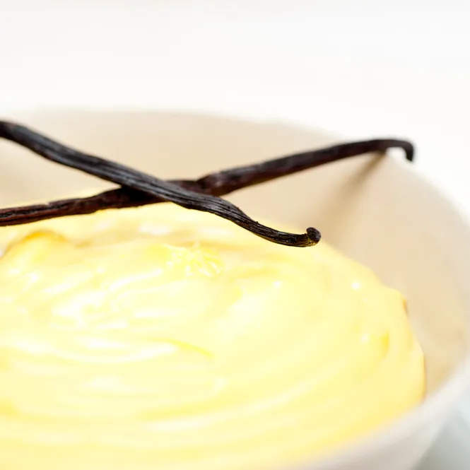

Vanilla Custard

Description
After a long search looking for a perfect recipe for vanilla custard, our good old neighborhood food activist Jamie Oliver runs to the rescue. This custard is supposed to be smooth, not too solid nor too runny.
Ingredients
- 500ml milk
- 500ml cream
- 1 pack of vanilla
- 8 egg yolks
- 5 tbsp sugar
- 1 tea spoon cornflour
Steps
- Put a pan on medium-high heat
- Pour milk and cream in and bring up to heat.
- Add vanilla, bring up to simmer and simmer for 5 minutes.
- In a separate bowl, add sugar to egg yolks and whisk.
- Add cornflour to the bowl, continue whisking until no lump.
- Take a splash of milk into the eggs, whisk it in and add the mixture to the milk pan.
- Whisk the mixture on heat with "8" movement until it doesn't run on the back of the spoon.